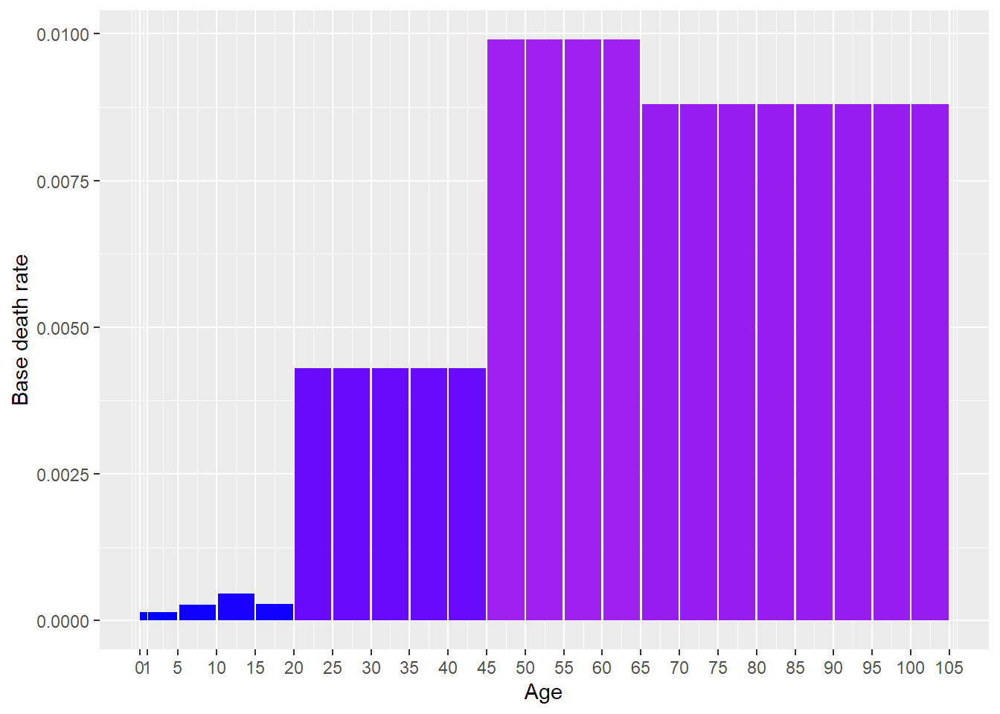
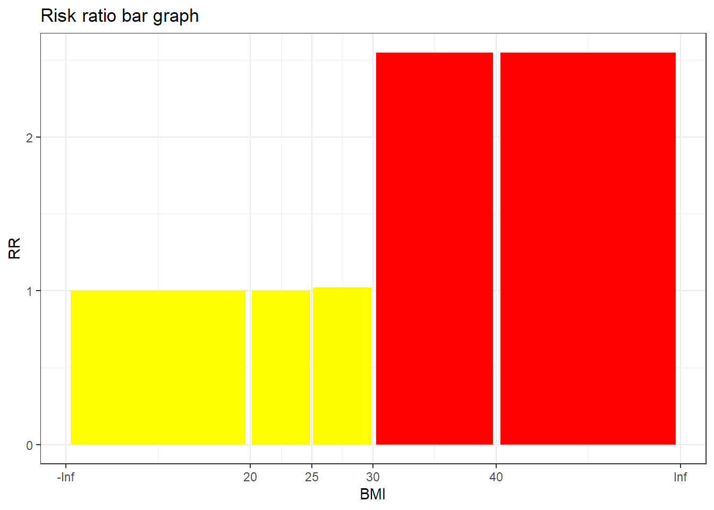
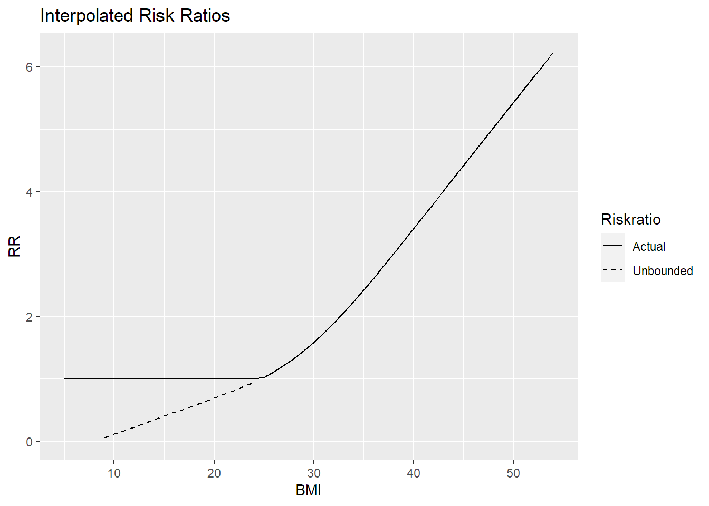
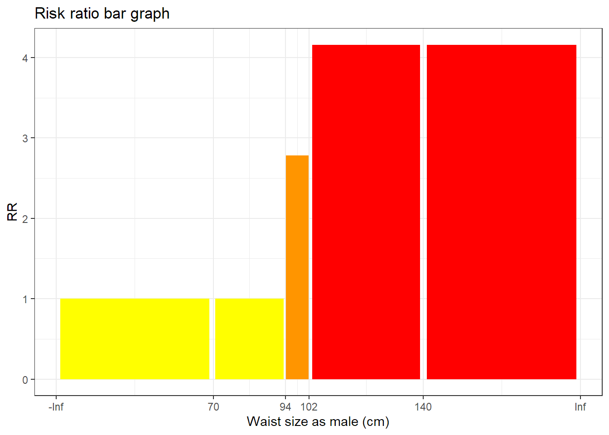
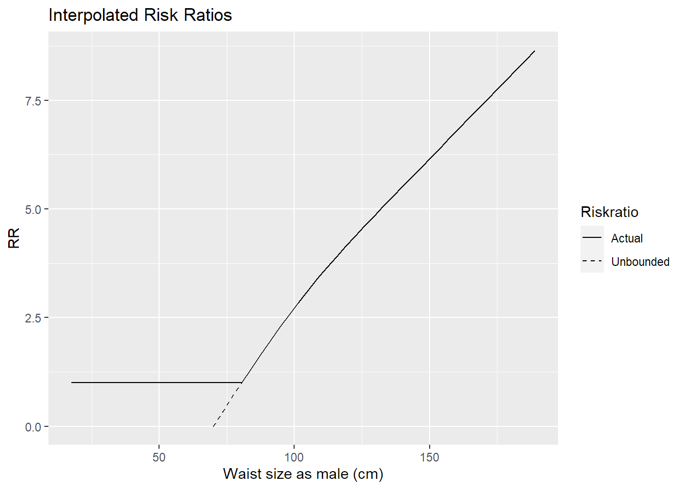

[partly auto-generated file]
Diabetes condition is a condition. It means that the model computes probabilities of getting or having it and uses that in further computations.
In the model Diabetes condition has the following risk factors
In the model Diabetes condition has the following special factors

The combined risk ratio of all risk factors is computed using the formula
\[ RR=RR_{\text{BMI}} \cdot RR_{\text{Waist (male)}} \]
The normalization factor is based on the joint distribution of all the risk factors and is computed using the formula
\[ P=P_{\text{BMI,Waist (male)}} \]
BMI is a risk factor for Diabetes condition.
Below is a plot of the risk ratios we have taken from the literature adjusted to fit the model

Because the variable BMI is numeric, we have computed a smoothed approximation.

Waist circumference as male is a risk factor for Diabetes condition.
Below is a plot of the risk ratios we have taken from the literature adjusted to fit the model

Because the variable Waist circumference as male is numeric, we have computed a smoothed approximation.

The factor Diabetes diagnosis is used to decide whether the probability of having diabetes should be computed. If one is already diagnosed with diabetes, there is no need to compute the probability of having diabetes because it will be 100%.